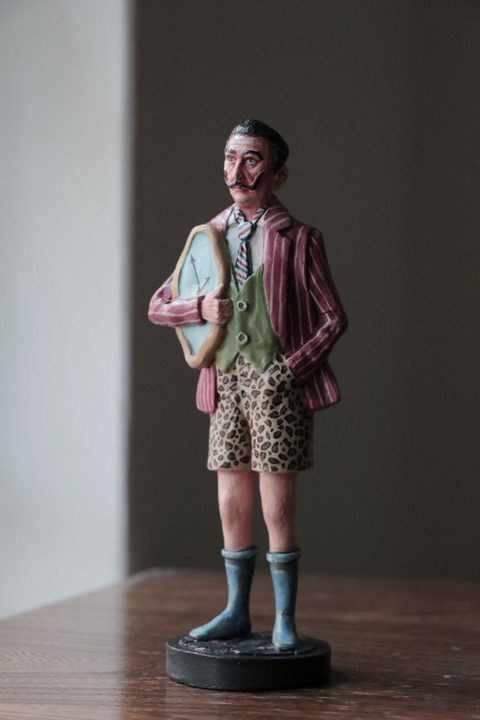
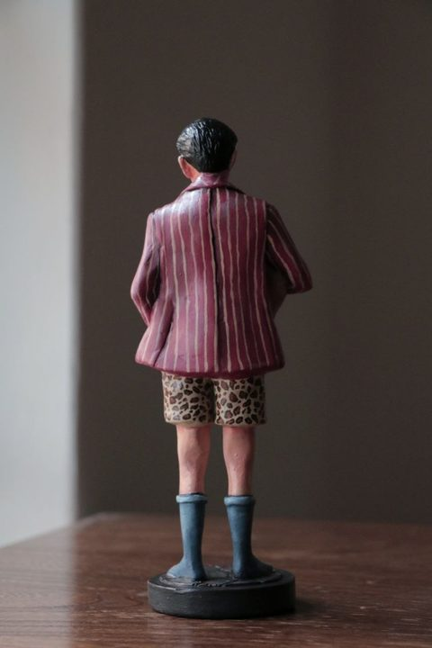
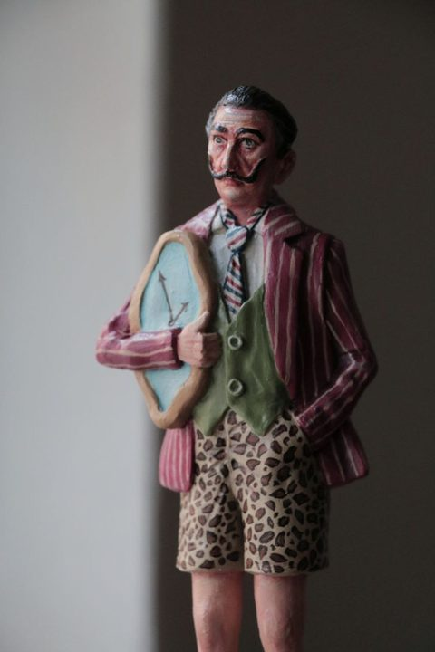
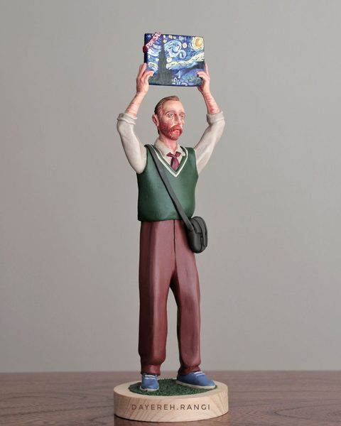
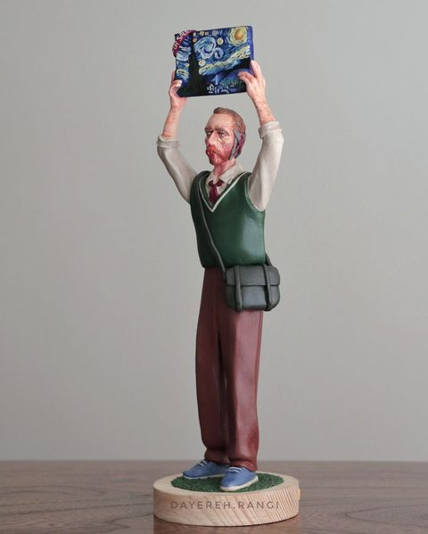
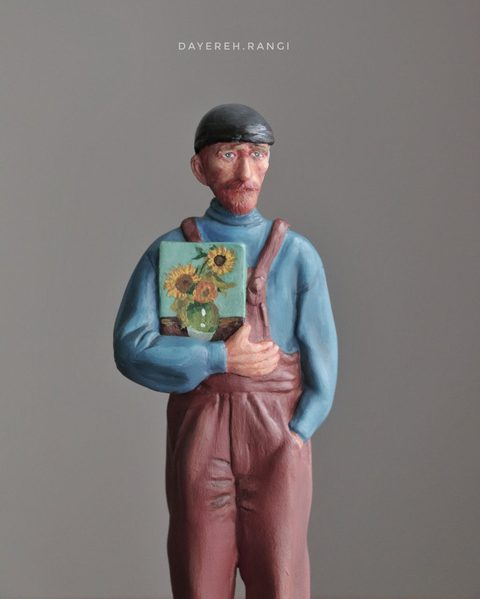
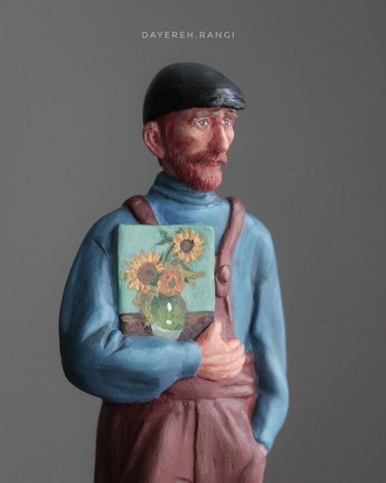
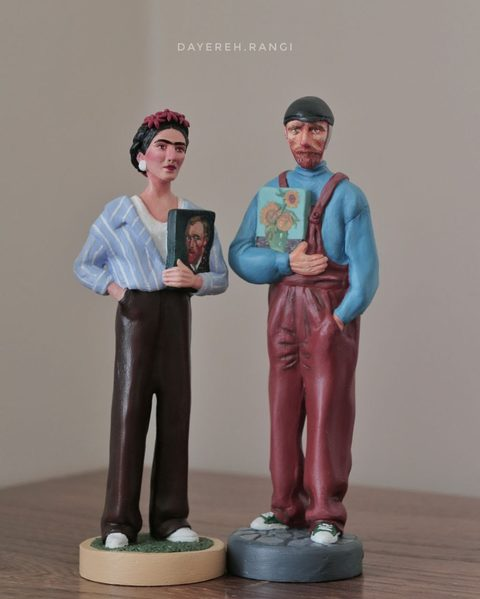
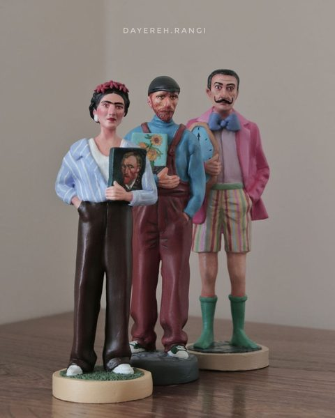
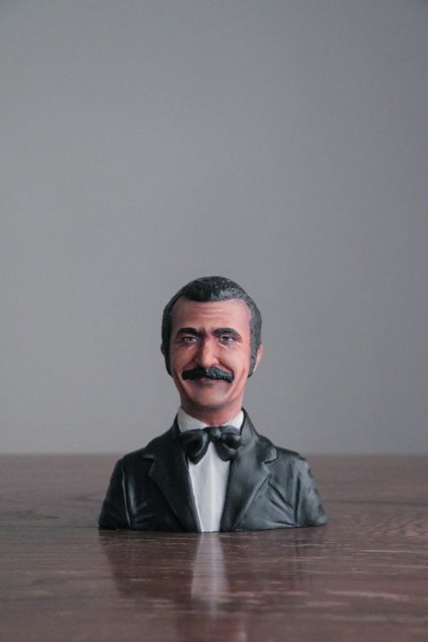

The Tiny Museum of Tiny Masters
Dayereh Rangi
by Panah Khamesi
Famous artists, small enough for a desk.
Enter the museumOpening hours · Your local time


All exhibit photographs



All exhibit photographs


All exhibit photographs



All exhibit photographs
